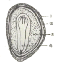
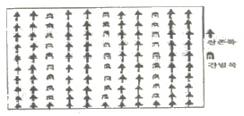
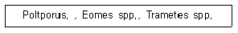
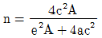
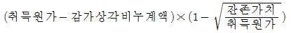
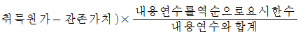
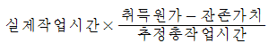
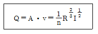
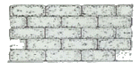

산림기사 (2006-05-14 기출문제)
1과목: 조림학
1. 다음 소나무 종자의 단면에서 내종피(內腫皮)는?

- 1
- 2
- 3
- 4
(정답률: 57%)

2. 비료목(肥料木)에 대한 설명으로 옳은 것은?
- 비료목을 식재할 경우에는 인위적인 시비를 하지 않아야 한다.
- 균근균이 공생하는 수종은 비료목이 될 수 없다.
- 비료목은 항상 주임목을 식재하기 이전에 먼저 식재되어야 한다.
- 싸리류나 아카시아나무 등과 같은 콩과식물은 근류균이 공생하기 때문에 비료목으로 적합하다.
(정답률: 66%)
3. 제벌(除伐)의 실행에서 고려해야 할 사항 중 옳지 않은 것은?
- 조림목이 자라 임관을 형성하면서 쓸모없는 나무가 조림목의 자랑을 방해할 때가 제벌을 실행할 시기이다.
- 침입목이 맹아력이 강한 활엽수라면 맹아에 대한 대비책을 강구해야 한다.
- 소나무와 낙엽송 조림지에서는 식재 후 20 ~ 30년 쯤이 제벌실행의 적절한 시기이다.
- 제벌의 시기는 나무의 고사상태를 알고 맹아력을 감소시키기 위하여 여름철에 실시하는 것이 좋다.
(정답률: 59%)
4. 다음 중 간형설에 포함되지 않는 것은?
- 영양설(榮養設)
- 수분통도설(水分通途設)
- C/N 율설(C/N 率設)
- 호르몬설(hormone設)
(정답률: 35%)
5. 임목에 따라 무기양료의 요구도 차이가 나는데 무기영양소를 적게 요구하는 수종만으로 구성된 것은?
- 오리나무, 자작나무
- 잣나무, 밤나무
- 피나무, 상수리나무
- 잣나무, 낙엽송
(정답률: 50%)
6. 묘포 적지의 선정시 중요한 인자가 아닌 것은?
- 노동력 공급이 용이한 곳
- 토양의 이학적 성질이 좋은 곳
- 영구적 관리시설을 설치할 수 있는 곳
- 관개 및 교통이 편리한 곳
(정답률: 61%)
7. 다음 작업종 중 생태적인 면에서 가장 바람직하지 못한 것은?
- 개벌
- 택벌
- 산벌
- 대상산벌
(정답률: 60%)
8. 파종상에서 2년, 그 뒤 상체상(床替床)에서 1년을 지낸 3년생 묘목을 가장 잘 표현한 것은?
- 2-1묘
- 1-2묘
- 1/2묘
- 2-1-1묘
(정답률: 67%)
9. 다음과 같은 간벌은 무슨 간벌인가?

- 택벌작업
- 하층간벌
- 기계적 간벌
- 상층간벌
(정답률: 64%)
10. 다음 중 삽목 할 때 주의 사항이 아닌 것은?
- 삽수의 끝눈은 남쪽을 향하게 한다.
- 포플러류 같은 속성수는 삽수를 수직으로 세우는 것이 일반적이다.
- 비가 온 후에 즉시 삽목을 하면 토양수분이 충분하므로 좋다.
- 삽수가 건조하거나 눈이 상하지 않도록 한다.
(정답률: 65%)
11. 다음 침엽수종 중 삽목 발근이 용이한 수종은?
- 향나무
- 잣나무
- 낙엽송
- 솔송나무
(정답률: 37%)
12. 소나무 임지를 교호대상개벌작업(交互帶狀皆伐作業)에 의해 갱신하려고 한다. 이때 일반적으로 가장 적당한 대폭(帶幅)은?
- 모수 수고의 약 1/2배 미만
- 모수 수고의 약 2 ~ 3배
- 모수 수고의 약 5 ~ 6배
- 모수 수고의 약 8 ~ 9배
(정답률: 48%)
13. 토양을 입단구조(粒團構造)로 만들기 위해 실시하는 작업 설명으로 옳은 것은?
- 모래질 토양을 충분히 객토한다.
- 비가 온 직후에 젖은 토양을 단단히 밟아준다.
- 염화칼륨 비료를 대량으로 시비한다.
- 퇴비를 충분히 주고 토양을 적절히 경운 해준다.
(정답률: 54%)
14. 다음 수목 중 자웅이주가 아닌 것은?
- 소나무
- 은행나무
- 꽝꽝나무
- 사시나무
(정답률: 56%)
15. 산림토양에 대한 설명으로 옳은 것은?
- 산림토양 단면은 일반적으로 층으로 구별되는 것이 특징이다.
- 토성이란 토양의 화학적 성질을 말한다.
- 집적층에 유기물이 가장 많다.
- 활엽수종 중에는 토양의 pH 값이 낮은 곳을 좋아하는 수종이 많다.
(정답률: 36%)
16. 밤나무 접목묘를 묘간거리 4m, 열간거리 5m로 식재하고자 한다. 1ha에 소요될 묘목의 본수는? (단, 수량 할증을 25% 고려한다.)
- 400주
- 500주
- 625주
- 1,000주
(정답률: 37%)
17. 다음 중 간접적 지위평가법에 해당되지 않는 것은?
- 구간법
- 지표식물에 의한 접근
- 지위지수
- 정밀도법
(정답률: 44%)
18. 예비벌, 하종벌, 후벌(종벌)의 작업과정을 거치는 것은?
- 산벌작업
- 왜림작업
- 군상 개벌작업
- 대상 택벌작업
(정답률: 64%)
19. 산림에 인위적 피해, 화산폭발 등 천재(天災)가 없으면, 그 산림은 점차 어느 극상의 산림수종으로 고정 되는가?
- 양수수종(陽樹樹種)
- 중용수종(中庸樹種)
- 음수수종(陰樹樹種)
- 극양수수종(極陽樹樹種)
(정답률: 30%)
20. 목련류(Magnolia)에 속하지 않는 수종은?
- 후박나무
- 함박꽃나무
- 태산목
- 백목련
(정답률: 53%)
2과목: 산림보호학
21. 방풍림에 대한 기술 중 옳은 것은?
- 수종은 천근성이고, 속성수로 심는다.
- 지조(枝條)가 밀생하는 천근성 수종을 심는다.
- 폭풍 방향에 대해 일직선의 군상방향으로 만든다.
- 방풍림의 효과는 풍하(風下)에서 수고의 약 15 ~ 20배이다.
(정답률: 32%)
22. 다음 해충 중 충영 형성 해충이 아닌 것은?
- 느티나무외줄진딧물
- 복숭아명나방
- 향나무혹파리
- 솔잎혹파리
(정답률: 39%)
23. 저온의 피해로 나타나는 상륜(霜輪)에 대한 설명으로 옳은 것은?
- 조상(早霜)의 피해로 나타나는 현상으로 일시 생장이 중지되었을 때 나타난다.
- 지형적으로 습기가 많고 낮은 지대, 곡간, 소택지 등에 상륜의 피해가 많다.
- 상해의 피해 중 만상(晩霜)의 피해로 나타나는 일종의 위연륜을 말한다.
- 고립목이나 산림의 임연부에서 한겨울 밤 수액이 저온으로 얼면서 나타나는 피해현상이다.
(정답률: 65%)
24. 우리나라 밤나무에 가장 문제시되는 병은?
- 밤나무 줄기마름병
- 밤나무 눈마름병
- 밤나무 잉크병
- 밤나무 흰가루병
(정답률: 66%)
25. 포스팜 50% 액제 50cc를 0.5%로 희석하려고 할 경우 요구되는 물의 양은? (단, 원액의 비중은 1이다.)
- 2,550cc
- 4,950cc
- 5,⑤0cc
- 5,550cc
(정답률: 42%)
26. 다음 중 모잘록병균의 중요한 월동 장소는?
- 곤충체내
- 나무줄기
- 토양내
- 잡초
(정답률: 72%)
27. 다음 중 우리나라에서 극히 드물게 일어나는 산불은?
- 지중화
- 지표화
- 수간화
- 수관화
(정답률: 50%)
28. 솔잎흑파리의 월동 형태는?
- 알
- 유충
- 번데기
- 수관화
(정답률: 60%)
29. 수병의 발생에 관여하는 3대 요소가 아닌 것은?
- 병원체
- 기주식물
- 기생식물
- 환경
(정답률: 67%)
30. 산불경계경보를 내릴 수 있는 산불위험지수(Forest Fire Danger Index)로 가장 적합한 것은?
- 90 이상
- 81 ~ 100
- 61 ~ 80
- 41 ~ 60
(정답률: 40%)
31. 천적 등 방제 대상이 아닌 곤충류에 가장 피해를 주기 쉬운 농약은?
- 지속성접촉제
- 비지속성접촉제
- 훈증제
- 침투성살충제
(정답률: 50%)
32. 산림 해충 중 묘포에 발생하는 해충은?
- 흰불나방
- 거세미나방
- 솔잎혹파리
- 솔껍질깍지벌레
(정답률: 40%)
33. 다음 중 성충과 유충이 동시에 잎을 가해하는 해충은?
- 솔잎혹파리
- 거위벌레
- 매미나방
- 오리나무잎벌레
(정답률: 69%)
34. 세균에 의한 수목 병해로 가장 적합한 것은?
- 밤나무 뿌리혹병
- 향나무 녹병
- 삼나무 붉은마름병
- 낙엽송 가지끝마름병
(정답률: 67%)
35. 산불에 가장 중요한 영향을 주는 인자인 바람에 대한 설명으로 틀린 것은?
- 낮에는 계곡부에서 산정으로 . 밤에는 산정에서 계곡부로 분다.
- 바람은 연료의 수분 증발, 건조시킨다.
- 바람은 산소량을 증가시켜 연소를 강렬하게 한다.
- 일반적으로 바람의 이동방향은 저기압에서 고기압쪽으로 분다.
(정답률: 70%)
36. 잣나무 털녹병귬에 대한 설명으로 옳은 것은?
- 중간기주에 기주교대를 하는 이종 기생균(異種寄生菌)이다.
- 중간기주에 기주교대를 하는 동종 기생균(同種寄生菌)이다.
- 중간기주에 기주교대를 하지 않는 이종 기생균이다.
- 중간기주에 기주교대를 하지 않는 동종 기생균이다.
(정답률: 55%)
37. 다음 중 내화력이 강한 수종은?
- 참나무
- 벚나무
- 녹나무
- 피나무
(정답률: 24%)
38. 소나무좀의 년간 우화 횟수는?
- 1회
- 2회
- 3회
- 4회
(정답률: 68%)
39. 오리나무 갈색무늬병의 방제법으로 틀린 것은?
- 윤작을 피한다.
- 가을에 병든 낙엽을 모아 태운다.
- 종자소독을 실시한다.
- 속아주기를 실시한다.
(정답률: 53%)
40. 다음 병균들에 의하여 야기되는 질병은?

- 뿌리썩음병
- 목재썩음병
- 탄저병
- 소나무류의 녹병
(정답률: 27%)
3과목: 임업경영학
41. 대부분 농가 임업의 투차적 임업경영을 하고 있는데 그에 대한 설명으로 알맞은 것은?
- 표고 재배업자가 필요한 버섯나무를 생산하는 산림경영
- 농가가 영농용 자재생상을 목적으로 하는 산림경영
- 임업경영의 주체성이 강하지 못해 주로 유휴노력, 자본을 이용하여 소득증대를 도모하기 위한 산림경영
- 제재업자나 제지회사가 수요 원목을 공급하기 위한 산림경영
(정답률: 36%)
42. 임업경영의 지도원칙 중 경제성을 원칙에 관한 설명으로 옳지 않은 것은?
- 일정한 수익을 올리기 위하여 비용을 최소한으로 줄이는 원칙을 말한다.
- 일정한 비용으로서 최대한의 수익을 올릴 수 있도록 하는 원칙을 말한다.
- 최소의 비용으로서 최대의 효과를 발휘하는 원칙을 말한다.
- 최대의 비용으로서 매년 같은 양의 우식을 올릴 수 있도록 하는 원칙을 말한다.
(정답률: 67%)
43. 어떤 산림의 현실 축적을 조사하였더니 200,000m3이었다. 윤별기가 40년일 때 Mantel식에 의한 산림의 표준연벌량은?
- 5,000m3
- 10,000m3
- 15,000m3
- 20,000m3
(정답률: 20%)
44. 윤벌기를 몇 개의 분기(分期)로 나누고, 분기마다 수확량을 같게 하기 위해 실시하는 수확조절법은?
- 재적배분법
- 구획윤별법
- 평분법
- 영급법
(정답률: 36%)
45.

인 공식은 무엇을 나타내는가?- 생장량 결정
- 이령임의 연령 결정
- 표본점수 결정
- 변이계수 결정
(정답률: 48%)
46. 다음 중 임업자산을 “화폐로 표시괸 장래의 용역(future service), 또는 화폐로 바꿀 수 있는 장래의 용역” 이라고 정의한 사람은?
- NICKLISCH
- SCH AR
- CANNING
- MARTIN
(정답률: 20%)
47. 흉고직경 20㎝, 수고 10m 인 잣나무의 입목재적으로 가장 적합한 것은? (단, 형수표에서 f=0.4702으로 한다.)
- 0.1744m3
- 0.3141m3
- 1.25m3
- 12.566m3
(정답률: 39%)
48. 특정 산림에 대하여 보안림으로 지저하고자 할 때 옳지 않은 것은?
- 사업제한을 하고자 하는 목적은 반드시 공익적이어야한다.
- 사업제한으로 방지할 수 있는 공공위해의 정도 또는 얻을 수 있는 이익이 산주의 손익보다 작아야 한다.
- 공공위해의 방지나 복지증진이 사업제한이 아닌 다른 방법으로 이루어질 수 없다고 인정되어야 한다.
- 위해를 당한 사람들이 스스로 위해를 방지하기 위하여 적당한 대책을 강구했음에도 불구하고 산림하기사업의 제한이 필요하다고 인정되어야 한다.
(정답률: 50%)
49. 임지의 자연적 생산력을 가장 포괄적으로 표시하는 것은?
- 지리지수
- 지위지수
- 임목비옥도
- 토양습도
(정답률: 75%)
50. 임업경영의 성과분서은 임가소득, 임업소득 또는 임업순수익으로 진행할 수 있다. 이때 성과 분석을 위한 하나의 지침으로서 임업의존도는 무엇을 말하는가?
- 임업소득/임가소득×100
- 임업소득/가계비×100
- 임업소득/임업조수익×100
- 가계비/임업소득×100
(정답률: 70%)
51. 다음 중 정액법(定額法)에 의한 감가상각비 계산방법은?
- 취득원가-잔조가치/추정내용연수



(정답률: 69%)
52. 유령림(幼令林)에서 임목가(林木價)를 평정하는데 적합한 방법은?
- 임목 매매가
- 임목 비용가
- 임목 기망가
- 글라젤(Glaser)법
(정답률: 67%)
53. 수간석해(樹幹析解)를 통해 얻어진 총 재적을 구할 때 합산하지 않아도 되는 것은?
- 근주재적
- 결정간재적
- 지조재적
- 초단부재적
(정답률: 53%)
54. 면적평분법(面積平分法)의 설명과 관련이 없는 은?
- 조사법(照査法)
- 복벌(復伐)
- 소속 분기
- 경리기외편입(經理期外編入)
(정답률: 39%)
55. 임지가격을 B라고 할 때 매년지대를 m 년간 지불한 후가 합계는?
- B1.0pm
- B(1.0pm-1)
- B/1.0pm
- B/1.0pm-1
(정답률: 34%)
56. 지위지수를 사정하는 방법 중 가장 많이 이용되는것은?
- 재적에 의하는 법
- 토지인자를 종합하여 판단하는 법
- 수고에 의하는 법
- 지표식물에 의하는 법
(정답률: 61%)
57. 흉고형수를 좌우하는 인자가 아닌 것은?
- 수종과 품종
- 지리
- 수고
- 연령
(정답률: 43%)
58. 다음 중 ENARESS의 임분기망가(林分期望價) 설명으로 옳은 것은?
- 임목기망가+임목비용가
- 임목기망가+토지기망가
- 임목기망가+임목비용가
- 임목비용가+임지기망가
(정답률: 44%)
59. 임목의 평가방법을 분류할 때 설명으로 옳은 것은?
- 원가방식에는 기망가법이 있다.
- 수익방식에는 비용가법이 있다.
- 원가수익절충방식에는 매매가법이 있다.
- 비교방식에는 시장가역산법이 있다.
(정답률: 35%)
60. 형 산림 축적이 1,000m3이고 생장률이 연 3%일 때 10년 후 산림축적을 단리법 계산에 의해 구면 얼마인가?
- 1,000m3
- 1,100m3
- 1,200m3
- 1,300m3
(정답률: 50%)
4과목: 임도공학
61. 다음 중 영업적 기능에 따른 구분과는 별도로 이용의 집약성에 따라 구분된 임도는?
- 시업임도
- 도달임도
- 부임도
- 작업도
(정답률: 33%)
62. 임도사면괴를 방지하기 위한 돌망태쌓기공법의 특징이 아닌 것은?
- 일체성과 연속성을 지닌 구조물이다.
- 보강성 및 유연성이 좋다.
- 투수성 및 반응성이 불량이다.
- 돌망태 재료는 #8~#12의 아연도금한 철선이 주로 사용된다.
(정답률: 59%)
63. 촉선 AB의 방위각이 45°, 촉선 BC의 방위각이 130°일 때 교각은?
- 45°
- 75°
- 85°
- 175°
(정답률: 48%)
64. 양도의 노체(露體)를 구성하는 요소가 아닌 것은?
- 노상
- 노면
- 기충
- 양반
(정답률: 65%)
65. 임도배수관의 유속을 구하는 다음의 매닝(Manning)공식에서 ‘R’이 나타내는 것은?

- 유로조도계수
- 경싱
- 배수관반지름
- 배수관물매
(정답률: 50%)
66. 임도에 있어 최소 종단 물매를 뮤지해야 하는 이유는?
- 시공비용이 높기 때문에 벌채정까지 신속히 접근시키기 위함이다.
- 시공시 성토면의 토량을 확보하여 시공비를 절약하기 위함이다.
- 임도 표면의 배수를 용하게 하여 임도 파손을 막고, 유지비를 절약하기 위함이다.
- 임도 표면에 잡초들의 발생을 에방하여 유지비르 절약하기 위함이다.
(정답률: 61%)
67. 성토지에 유수, 용수가 유입되면 무너질 염려가 있다. 이것을 방지하는 가장 효과적인 방법은?
- 명암거배수공
- 동수로공
- 우회수로
- 단끊기
(정답률: 35%)
68. 임도개설시 흙을 다지느 목적과 관계가 적은 것은?
- 압축성의 감소
- 투수성의 증대
- 흡수력의 감소
- 지지력의 증대
(정답률: 42%)
69. 반출할 목재의 길이가 15m, 도로의 폭이 3.5m 일 때 최소 곡성반지름은?
- 약 14m
- 약 16m
- 약 18m
- 약 20m
(정답률: 28%)
70. 산림법상 길어깨 및 옆도랑의 최소너비 기준은?
- 20㎝
- 50㎝
- 100㎝
- 150㎝
(정답률: 63%)
71. 축적 1/1,000 도면에서 척도를 1/500로 착각하여 면젹을 계산한 결과 200m2 를 얻었다. 실제 면젹은 얼마인가?
- 200m2
- 400m2
- 600m2
- 800m2
(정답률: 43%)
72. 임도에서 용수가 있는 절개지 비탈면에 비탈면격자돌붙이기 공법을 채택하고자 할 때 격자돌 내부의 처리 방법으로 옳은 것은?
- 작은 돌 채움
- 콘크리트 채움
- 떼 붙이기
- 흙 채움
(정답률: 39%)
73. 임도노선의 선정요인 중 공약적 기능에 대한 고려 사항이 아닌 것은?
- 절취, 벌개 등을 최소화할 수 있도록 노선을 선정한다.
- 양석지대는 가급적 굴착 후 통과하도록 한다.
- 절취 및 성토의 비탈면 안정을 도모할 수 맀는 공정을 선정한다.
- 발샌토량이 많거나 흙을 피하지 않으면 안되는 지대를 부득이 통과하는 경우에는 교량이나 터널을 계획하여야 한다.
(정답률: 50%)
74. 다음 암석 중 시공지의 토성이 양질 또는 사질토가 될 모양의 종류는?
- 안산암(安山岩)
- 화강암(花崗巖)
- 석회암(石灰岩)
- 혈암(頁岩)
(정답률: 43%)
75. 절∙성토 공사를 실시할 때 표토층과 지피식생을 다루는 방법으로 틀린 것은?
- 지피식생이나 표토층은 토공재료로서 부적합하기 때문에 성토재료로서 사용해성 안된다.
- 표도에는 유기물질이 많이 들어있고 토양활동(滑動)의 원인이 되기 때문에 성토부 중심재료로 사용하는 것은 위험하다.
- 표토나 지피식생은 제거하여 모아 두었다가 성토부 논화재료로 사용해야 한다.
- 우리나라의 경우 표토층이 발달해 있지 않기 때문에 표토층을 제거 없이 그대로 성토부에 사용해도 상관없다.
(정답률: 63%)
76. 산림법상 임도의 원칙적인 유효너비는? (단, 길어깨, 옆도랑의 너비는 제외한다.)
- 3m 내외
- 4m 내외
- 5m 내외
- 7m 내외
(정답률: 55%)
77. 길어깨 바깥쪽이나 옹벽의 상부에 목책을 설치하여 낙석이 노면으로 전략하는 것을 저지하는 공법은?
- 낙석방지망닾기공법
- 낙석방지책공법
- 돌망태흙막이공법
- 바자얽기공법
(정답률: 55%)
78. 임도의 계획시 곡선부를 넣어야 하는 경우, 곡성부 곡률반경의 최소한도에 영향을 주는 인자가 아닌 것은?
- 임도의 종단매물
- 임도의 너비
- 반출목재의 길이
- 도로의 구조 및 시기
(정답률: 24%)
79. 산림법상 대피소 설치 간격 기준으로 옳은 것은?
- 100m 이내
- 300m 이내
- 500m 이내
- 1,000m 이내
(정답률: 19%)
80. 임도의 설계 업무 순서로 옳은 것은?
- 예비조사 → 예측 → 실측 → 답사→ 설계서 작성
- 예비조사 → 예측 → 답사 → 실측→ 설계서 작성
- 예비조사 → 답사 → 실측 → 예측→ 설계서 작성
- 예비조사 → 답사 → 예측 → 실측→ 설계서 작성
(정답률: 60%)
5과목: 사방공학
81. 붕괴형 침식 중에서 그 발생 부위가 반드시 예전의 유수와 밀접한 관계가 있는 것은?
- 포락(caving)
- 산봉(landslip)
- 붕락(slumping)
- 암설붕(debris slip)
(정답률: 59%)
82. 산복수로에서 쌓기공작물의 높이가 3m이고, 수로깊이가 1m일 때 수로받이의 근사적 길이는?
- 2.0~4.0m
- 4.0~6.0m
- 6.0~8.0m
- 8.0~10.0m
(정답률: 43%)
83. 다음 중 녹화용 재래 초본식물은?
- 김의털
- 겨이삭
- 지팽이풀
- 다년생 호밀풀
(정답률: 50%)
84. 댐 밑의 세굴을 방지하기 위해서 설치하는 물받침의 길이는 낮은 댐인 경우 일반적으로 물 높이에 대한 얼마만큼의 비율로 하는가?
- 물 높이와 동일하게
- 물 높이의 1.5배
- 물 높이의 2.0배
- 물 높이의 2.5배
(정답률: 23%)
85. 사방댐의 안정에 대한 설명으로 옳지 않은 것은?
- 합력의 작용선이 제저(堤底) 중앙 1/3 범위내에 있어야 전복되지 않는다.
- 제저에 발생하는 최대 압력강도는 지반의 지지력 강도보다 커야 안정하다.
- 합력의 수평분력과 수직분력의 비가 제저와 기초자반사이의 마찰계수보다 적으면 활동하지 않는다.
- 제저에 발생하는 최대압력간도는 지반의 지지력 강도를 초과해서는 안된다.
(정답률: 48%)
86. 유역면적이 1ha이고, 최대 시우량이 90㎜/ha일 때 시우량법에 의한 예획 지점에서의 최대 홍수 유량은? (단, 우거계수 K=0.8로한다.)
- 20m3/sec
- 2m3/sec
- 0.2m3/sec
- 0.02m3/sec
(정답률: 60%)
87. 한국산업규격에서 10㎜ 체를 전부 통과하고, 5㎜ 체를 거의 다 통과하여, 0.08㎜ 체에 거의 남는 골재는?
- 잔골재
- 굵은골재
- 보통골재
- 가공골재
(정답률: 48%)
88. 요가방지(생태복원대상지)를 유형별로 분류할 때 황폐지의 초기 단계는?
- 황폐이행지
- 초기 황폐지
- 민둥산
- 척악임지
(정답률: 53%)
89. 비탈다듬기나 단끊기 공사로 생긴 토사의 활동(滑動)을 방지하기 위하여 설치하는 공작물은?
- 산복돌망태흙막이
- 묻히기공작물
- 산복바자얽기
- 떼단쌓기
(정답률: 20%)
90. 비탈면 붕괴의 발생 메커니즘에 대한 설명으로 틀린 것은?
- 비탈면에 산림의 성립은 하중을 증가시켜 전수직응력이 커진다.
- 비탈면에 근계가 발달하면 정착력과 내부마찰각에 영향을 준다.
- 비탈면에서의 점착력과 내부마찰각은 표층의 종류 및 함수상태에 따라 다르다.
- 강우 등으로 토층과 하부의 경암 사이에 공극수압이 발생하면 유효수직응력은 그 만큼 증대된다.
(정답률: 37%)
91. 다음 중 붕괴형 산사태에 대한 설명으로 옳은 것은?
- 파쇄대 또는 온천지대에서 많아 발생한다
- 속도는 완만해서 토괴는 교란되지 않고 원형을 유지 한다.
- 이동면적이 1ha 이하가 많고, 깊이도 수 m 이하가 많다.
- 활재(滑材)가 있는 경우가 많고, 지하수가 유인되는 경우가 많다.
(정답률: 41%)
92. 땅 깎아내기 공사에 효율성이 가장 낮은 중장비는?
- 포크레인
- 불도져
- 스크레이퍼
- 그레이더
(정답률: 44%)
93. 황폐 계천의 사방공작물을 중 황(璜)공작물이 아닌 것은?
- 사방댐
- 골막이(구곡막이)
- 바닥막이
- 둑쌓기
(정답률: 55%)
94. 선떼붙이기 공법에 사용되는 떼 중 가장 윗부분에 사용되는 떼의 명칭은?
- 선떼
- 갓떼
- 받침떼
- 바닥떼
(정답률: 48%)
95. 산불이 토양침식에 미치는 영향에 대한 설명으로 틀린 것은?
- 산물로 광물질이 노출되면 빗방울 충격으로 토양 침식량을 증가시킨다.
- 수관과 임지 소새(疏開)로 인하여 지표 유하수사 증가하며, 그 결과로 표면침식이 많이 일어나게 된다.
- 유기물층이 감소함으로써 보수력이 맞아지고 연소과정에서 유기물 내의 휘발성 물질이 토영 속에 응축되어 물이 침투하기 쉽다.
- 산불은 토양속에 유기물 연소로 인해 소수성층(疏水性層)을 형성하여 물의 침투력을 약화 시킴으로써 토양이 건조해지고 침식을 증가시킨다.
(정답률: 38%)
96. 사방공작물 중 상류에서 하류에 따라 적합하게 시공되는 공작물 배치는?
- 흙막이 - 구곡막이 - 바닥막이 - 사방댐
- 사방댐 - 구곡막이 - 흙막이 - 바닥막이
- 구곡막이 - 바닥막이 - 흙막이 - 사방댐
- 바닥막이 - 구곡막이 - 흙막이 - 사방댐
(정답률: 22%)
97. 폐탄광지 복구를 위한 공법으로 부적합한 것은?
- 산복 돌 쌓기
- 비탈면 격자돌 붙이기 공법
- 상록대묘 식재공법
- 기슭막이 공법
(정답률: 36%)
98. 아래 그림은 어떤 종류의 돌쌓기인가?

- 켜쌓기
- 막쌓기
- 골쌓기
- 육모쌓기
(정답률: 46%)
99. 사방댐에서 안전시공을 위해 고려해야 할 외력은?
- 수입
- 수속
- 풍력
- 물받이 면적
(정답률: 44%)
100. 콘크리트 배함시 콘크리트가 잘 굳어지도록 일반적으로 사용되고 있는 혼합제(混合濟)는?
- 염화칼슘
- 규조토
- 규산백토
- 석회
(정답률: 53%)